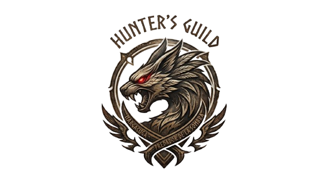
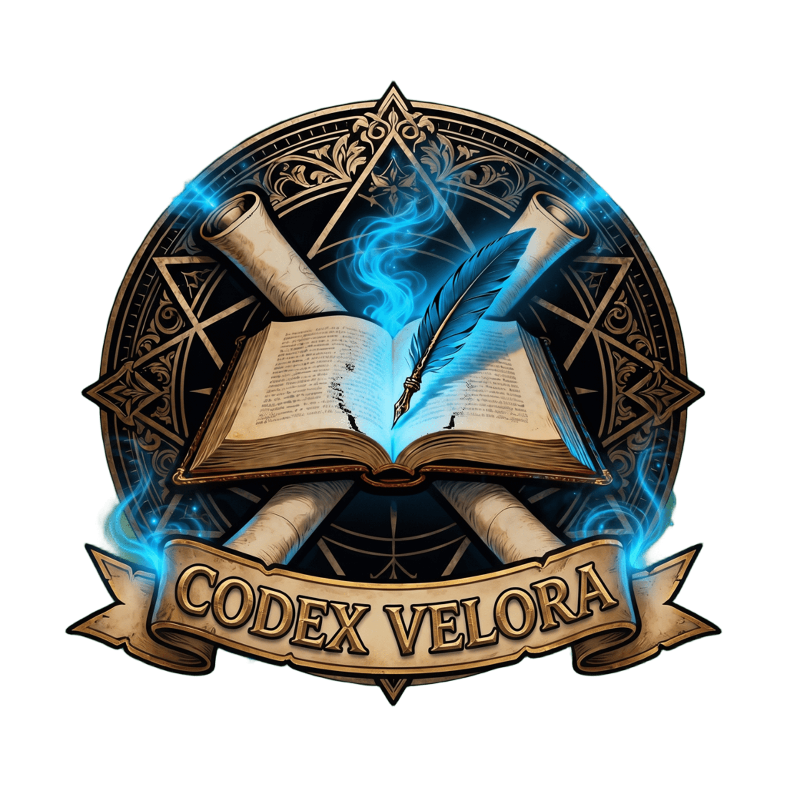
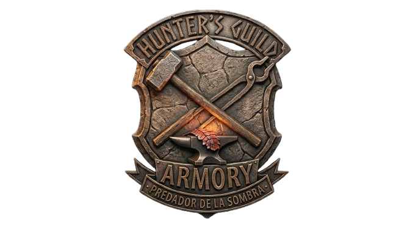
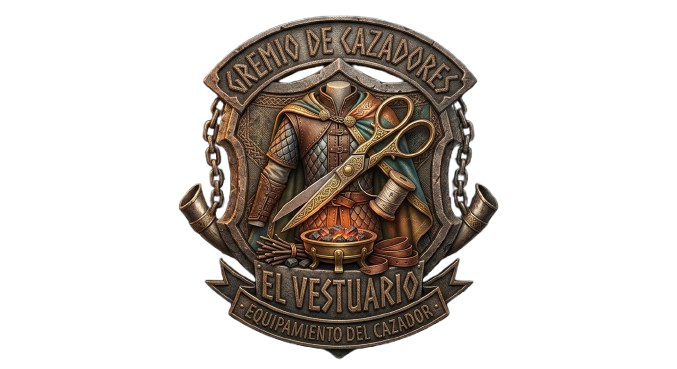
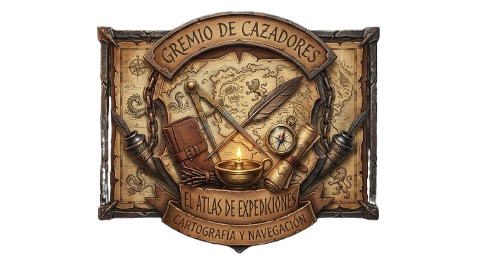
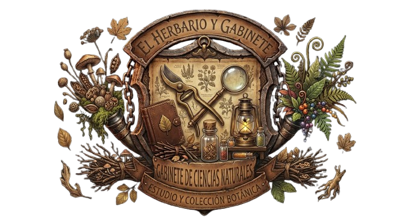
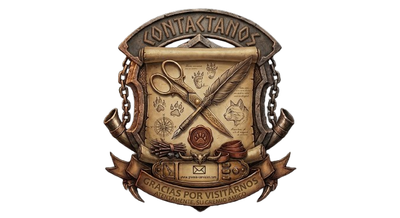

Bestiario

Registros de monstruos, hábitats, comportamiento y consejos de caza.
Consultar Criaturas
Codex VELORA · Monster Hunter
MONSTER HUNTER CÓDICE
Biblioteca de fauna, equipo y expediciones
Crónicas, bestias y secretos del mundo conocido.
Todo monstruo deja una huella. Todo cazador, una historia.
Este archivo
reúne los
conocimientos de quienes
exploran territorios salvajes y estudian las criaturas que los habitan.

Registros de monstruos, hábitats, comportamiento y consejos de caza.
Consultar Criaturas
Un catálogo de armas, estilos de combate y caminos de mejora.
Consultar Armas
Armaduras, conjuntos y habilidades para preparar cada expedición.
Consultar Equipo
Territorios, ecosistemas y lugares que conviene conocer.
Consultar Atlas
Plantas, minerales, huesos y materiales útiles para el cazador.
Consultar Herbario
Envía una observación, sugiere una entrada o comparte una corrección.
Contactanos